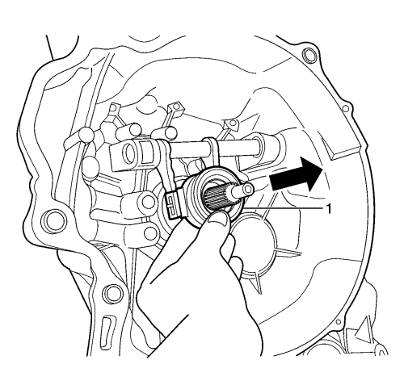
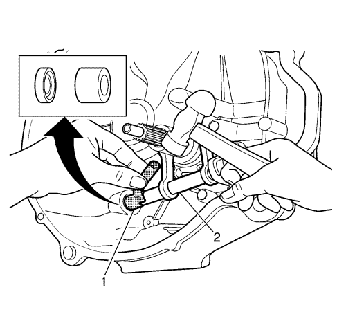
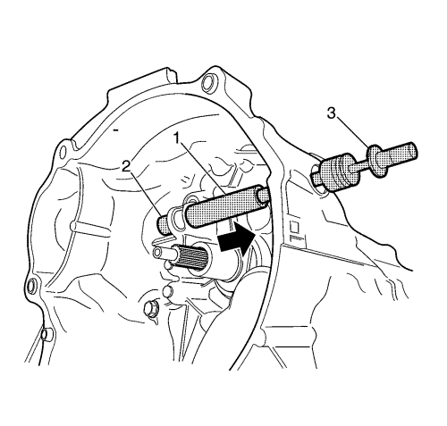
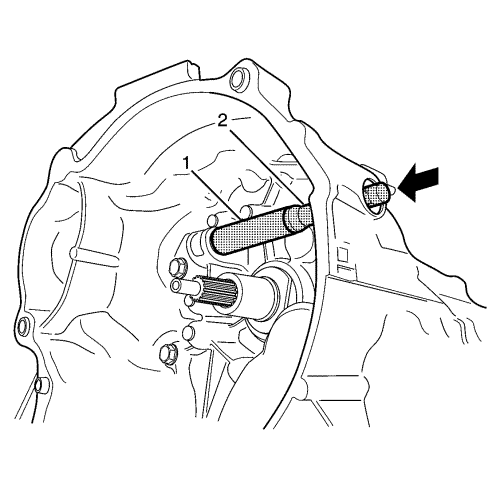
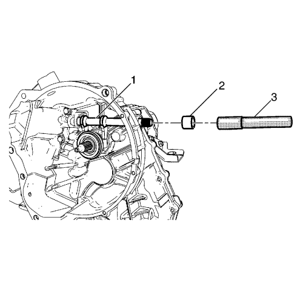
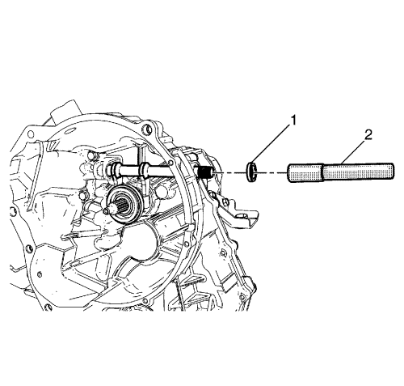
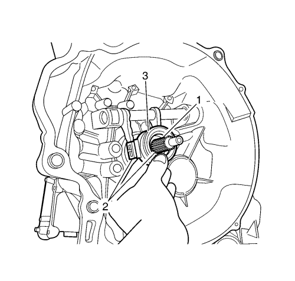

Desmontaje del cojinete de desembrague
Herramientas especiales
| • | DT-49085 Extractor de casquillos |
| • | DT-49086 Extractor/instalador de casquillos |
| • | DT-49087 Extractor de casquillos |
| • | DT-50059 Eje deslizante |
| • | DT-50060 Herramienta de montaje de casquillo/cojinete |
| • | DT-50199 Instalador de retén y casquillo |
Para información sobre herramientas locales equivalentes, consulte Herramientas especiales .
Procedimiento de desmontaje
- Extraiga el soporte de la caja de cambios del vehículo. Consultar Sustitución de la caja de cambios .
- Desmonte el brazo de desembrague. Consultar Sustitución de la palanca del pedal de embrague .

- Desmonte el cojinete de desembrague (1).

- Desmonte el casquillo (nº 2) y el retén con la ayuda del extractor de casquillos DT-49085 (1) y un martillo.
- Desmonte el eje de desembrague (2).

- Monte la herramienta de desmontaje y montaje de casquillos DT-49086 (1) y la herramienta de desmontaje de casquillos DT-49087 (2) en el casquillo nº. 1.
- Conecte el eje deslizante DT--50059 (3) en el extremo de la herramienta de desmontaje y montaje de casquillos DT-49086 (1).
- Desmonte el casquillo nº. 1 tirando de él.
Procedimiento de montaje

- Monte el nuevo casquillo del eje de desembrague nº 1 utilizando la herramienta de desmontaje y montaje de casquillos DT-49086 (1), DT-50060, la herramienta de montaje de casquillos y cojinetes (2) y un martillo.

- Recubra el eje de desembrague y el casquillo con grasa.
- Monte el eje de desembrague (1).
- Instale el casquillo del eje de desembrague nº 2 (2) utilizando la herramienta de desmontaje y montaje de casquillos DT-50199, la herramienta de montaje de juntas (3) y un martillo.

- Monte la junta del eje de desembrague (1) utilizando la herramienta de montaje de casquillos y juntas DT-50199, la herramienta de montaje de juntas (2) y un martillo.

- Aplique grasa para usos generales a las estrías del eje primario de la caja de cambios (1).
- Aplique grasa para usos generales al alojamiento del cojinete y a la conexión del eje de desembrague (2).
- Monte el cojinete de desembrague (3).
- Monte el brazo de desembrague. Consultar Sustitución de la palanca del pedal de embrague .
- Monte la caja de cambios en el vehículo. Consultar Sustitución de la caja de cambios .
| © Copyright Chevrolet Europe. All rights reserved |